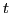
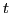

Next: Component velocities. Curvilinear motion. Up: Simple applications of the Previous: Examples Contents Index
Included also are applications to velocity and rectilinear motion.
Consider the motion of a point P on the straight line AB.
Let  be the distance measured from some fixed point as A to any
position of P, and let  be the corresponding elapsed time.
To each value of corresponds a position of P and
therefore a distance (or space)
be the distance measured from some fixed point as A to any
position of P, and let  be the corresponding elapsed time.
To each value of corresponds a position of P and
therefore a distance (or space)  . Hence
. Hence  will be a
function of , and we may write
will be a
function of , and we may write
For the general case of any kind of motion, uniform
or not, we define the velocity (or, time rate of change of s)
at any instant as the limit of the ratio
as
 approaches the limit zero; that is,
approaches the limit zero; that is,
To show that this agrees with the conception we already have of velocity, let us find the velocity of a falling body at the end of two seconds.
By experiment it has been found that a body falling freely from rest in a vacuum near the earth's surface follows approximately the law
FIRST STEP. .
SECOND STEP. .
THIRD STEP.
average velocity throughout the time interval  .
.
Placing ,
Thus even the everyday notion of velocity which we get from experience involves the idea of a limit, or in our notation
The above example illustrates well the notion of a limiting value.
The student should be impressed with the idea that a limiting value is a
definite, fixed value, not something that is only approximated.
Observe that it does not make any difference how small
may be taken; it is only the limiting value of
,
when  diminishes towards zero, that is of importance,
and that value is exactly .
diminishes towards zero, that is of importance,
and that value is exactly .